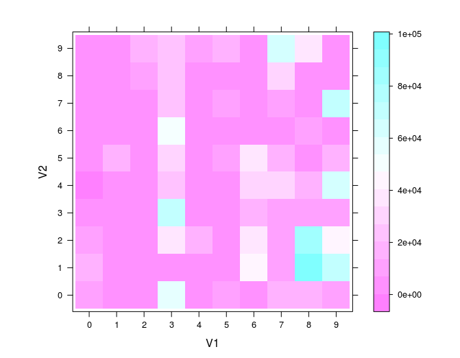
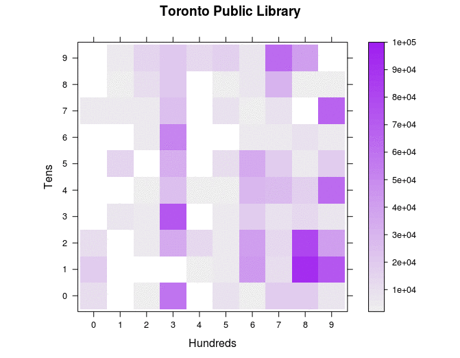

On Dentographs, A New Method of Visualizing Library Collections
By William Denton <wtd@pobox.com>
Introduction
These two checkerboard dentographs compare the holdings of the Toronto and San Francisco Public Libraries:

Figure 1. Checkerboard dentographs of the Toronto and San Francisco Public Libraries
Without knowing anything more about dentographs, it is clear at a glance that whatever it is that SFPL has, TPL has more.
When you know that both libraries use the Dewey Decimal Classification, and that the hundreds digit is shown along the x-axis and the tens along the y-axis, so that the colour of the square at (8,1) shows how many items are the 810s (American literature in English), you know even more about the TPL's collection of this subject and how much it outweighs SFPL's.
Mountain dentographs are best used for the Library of Congress Classification. They look like a series of mountain ranges, with one line of mountains per LC class letter. Here is a comparison of two branches of the University of Toronto, Canada's largest university library system:

Figure 2. Mountain dentographs of two U Toronto branches: Robarts (arts, humanities and social sciences) and Gerstein (science)
!!!TODO Handle Gabriel's comment: "Also, members of the committee grew more interested in the article as we discussed among ourselves the practical applications of dentograms for libraries -- especially within a consortial context, where one could use these visualizations to compare and attempt to dovetail collections. I'm sure you've envisioned a number of other uses well. Because dentograms are a new idea, I think we'll catch the eyes of more readers if we're explicit about ways in which they're (and problems they solve) up front, then get into the tech nitty-gritty afterward."
Mathematics and LIS
Classification schemes are mathematical functions. XXX defines a function as YYY.
!!!TODO Expand, briefly, on this. I intend to write a complete paper about this.
- Classification schemes as mathematical functions
- What kinds of functions are LC and DDC
- LC : {books at Library of Congress} --> [A--ZA 1--9999]
- DDC : {universe of knowledge} --> (0,1000)
Getting ready
R
All of the graphics here will be generated with R, which is described on its web site as "a language and environment for statistical computing and graphics." It's a powerful tool for advanced statistics, but it's also used for other purposes such as data mining and, as we'll be doing here, visualization. R on its own has a fairly simple interface, so I recommend also installing RStudio, a GUI that runs on top of R and provides an very powerful and much friendlier interface. Install R first, then RStudio. They both run on all major platforms. The examples below will all work with just R.
The code
All of the scripts used in this paper is available at http://github.com/wdenton/c4lj-dentographs. Every shell or R command is fully reproducible. There are two kinds of snippets of code below: $ is at the command line and > is in R.
To make a local copy of the repository, run this at the command line:
$ git clone http://github.com/wdenton/c4lj-dentographs
$ cd c4lj-dentographs
The last step is to set your R working directory to this same c4lj-dentographs directory. Either run R at the command line in that directory, or if you're using RStudio use Tools | Set Working Directory in the menu bar.
The data
Data files to replicate the examples are all available. Download the five files there to the c4lj-dentographs directory. They are all compressed with gzip so you will need to uncompress each before it can be used, for example:
$ gunzip utoronto-949.txt.gz
Call numbers
To generate dentographs we need call numbers. Data from one's own library is most interesting, however that may not be possible, since not all institutions have the time, resources, or inclination to supply such data for research. Luckily there is a very large and easily accessible open data source on the web: MARC records some libraries have uploaded to the Internet Archive to help the Open Library. A number of libraries have made their data available, and I use three here:
- San Francisco Public Library MARC records (1 of 16; search for the others) (Dewey Decimal Classification)
- Toronto Public Library MARC records (DDC)
- University of Toronto MARC records (Library of Congress Classification)
Two libraries supplied data to me on request, which I will use later to compare to U Toronto:
- University of Prince Edward Island provided a list of call numbers (LCC) and locations. My thanks to Melissa Belvadi of U PEI for doing this.
- York University Libraries, where I work, does not give open access to its MARC records, but I obtained a dump for this research. We use LCC.
Extracting data from MARC
Dealing with a large set of MARC records can be painful. There are so many ways that a library can customize its data for its individual needs that writing one script to extract call numbers from any of the Open Library dumps became tedious and complicated. In the end I found it was much easier and faster to run yaz-marcdump on all the files, pick out the one MARC field I needed, and then process those lines to pick out the call numbers and store them in a text file. I'll show how I did this with the Toronto Public Library (TPL) data.
The goal of operating on the TPL catalogue records is to extract every numerical call number in the range (0 < number < 1000). This will leave us with all nonfiction material and any fiction (or drama, poetry, etc.) that was classified with a number. Anything without a number will be ignored. This is a problem in fairly assessing public library collections, where fiction is often classified as FIC or something similar. The dentograph will only accurately represent the nonfiction collection.
Visual inspection of the TPL MARC records from the Internet Archive is easily done with yaz-marcdump. The Dewey number is stored in the 090 field (see MARC Bibliographic definition of 09x), and it was easy to extract all 2,210,126 to a file. (To save you the trouble of doing all the downloading, tpl-090.txt is one of the data files available, but to recreate it yourself you would get the files and run yaz-marcdump OL.20100104.* | grep ^090 > tpl-090.txt.)
$ wc -l tpl-090.txt
2210126 tpl-090.txt
$ head -5 tpl-090.txt
090 $a FICTION ROB
090 $a FEATURE AIK
090 $a 614.59939 REP
090 $a 614.59939 R25
090 $a 598.29729 FFR
extract-tpl-ddc-from-090.rb pulls out the numerical Dewey call numbers, ignoring everything else, such as "FICTION AIK" or "M" or ISBNs that might be stored in the $a. 645,244 090 fields end up being cast aside.
$ ruby extract-tpl-ddc-from-090.rb < tpl-090.txt > tpl-ddc-numbers.txt
$ wc -l tpl-ddc-numbers.txt
1564882 tpl-ddc-numbers.txt
$ head -3 tpl-ddc-number.txt
614.59939
614.59939
598.29729
Of course, any direct method of pulling DDC numbers from a library management system would be much easier than all this, but some processing and cleanup will probably still be necessary, AACR and MARC being what they are.
Extracting LC call numbers from the University of Toronto records is much the same, as we will see below, but with the advantage that fiction is also classified, so we will end up with a list of call numbers covering everything in the collection. Everything, that is, with a proper LC call number: special schemes for government documents, audio and video, maps, and the like must be left out.
Checkerboard dentographs
The Dewey Decimal Classification is nicely suited to visualization because of its rigidity. The hundreds define the ten top-level classes: Computer science, information and general works (0xx), Philosophy and psychology (1xx), Religion (2xx), Social sciences (3xx), Language (4xx), Science (5xx), Technology (6xx), Arts and recreation (7xx), Literature (8xx), and History and geography (9xx). Each hundred is divided into ten tens and each ten into ten ones, within with the decimal expansions can go much farther.
We can divide up a Dewey collection into these hundreds, tens, ones, and even decimals, in various ways, and each leads to a dentograph of different granularity, complexity, and visual informativeness. To do these Dewey dentographs we will use the levelplot command in R.
One-by-one
The most basic Dewey dentograph shows the collection broken down to the tens: the ten hundreds are broken down into ten tens each, making a 10x10 grid with 100 squares. I call this a one-by-one Dewey checkerboard dentograph, because it uses one number of importance on each side of the grid.
To build the one-by-one we need to pick out the hundreds and tens from our list of call numbers. make-one-by-one-data.rb in the repository does this. Run the script on the file of all call numbers and generate a text file of pairs of numbers (compare these numbers to the ones above):
$ ruby make-one-by-one-data.rb tpl-ddc-numbers.txt > tpl-one-by-one.txt
$ head -3 tpl-one-by-one.txt
6 1
6 1
5 9
Now, finally, the preprocessing is done and we are ready to begin our work in R. This is often how work with R is done: another language is used to clean and prepare the data before it is loaded. R has text manipulation tools, but that is not its main strength, and if you are comfortable in a scripting language then you will probably find it easier to massage your data with it.
It only takes four commands in R to generate a raw, unadorned checkerboard dentograph. One: load the lattice library, which provides the levelplot command. Two: load the data. Three: turn that data into a table. Four: generate a levelplot from the table.
> library(lattice)
> tpl.one.by.one <- read.table("tpl-one-by-one.txt")
> tpl.one.by.one.table <- table(tpl.one.by.one)
> levelplot(tpl.one.by.one.table)

Figure 3. Raw, unadorned Toronto Public Library one-by-one checkerboard dentograph
We'll make that look nicer, but first, let's look into the data structures a little more. The head command in R is much like the Unix command, but instead of showing the first few lines in a file it shows the first few elements in a data structure. The numbers here are the same as above, but R has converted them into two columns and many rows.
> head(tpl.one.by.one)
V1 V2
1 6 1
2 6 1
3 5 9
4 3 6
5 3 6
6 9 7
> ncol(tpl.one.by.one)
[1] 2
> nrow(tpl.one.by.one)
[1] 1564666
The table command "uses the cross-classifying factors to build a contingency table of the counts at each combination of factor levels", according to the ?table help file. In other words, with our Dewey data, it will build a 10x10 table that counts how many times each pair of numbers appears in the tpl.one.by.one data frame.
> tpl.one.by.one.table
V2
V1 0 1 2 3 4 5 6 7 8 9
0 11648 19793 10232 1453 21 456 1298 4547 589 737
1 738 915 1661 6566 815 15094 398 4877 2100 4193
2 2654 878 5245 4987 3526 1523 5457 4636 11107 15440
3 59634 1518 34402 72476 25494 32259 50131 24536 20430 20600
4 1471 2694 13608 1943 3786 1044 1755 383 516 12257
5 8261 5968 5262 5499 3740 11867 1792 8387 3994 17269
6 2412 43022 40281 19564 28335 35299 5786 3149 6261 6193
7 18948 10984 13396 9673 27130 18819 4962 8883 30110 62074
8 18840 93554 80340 13161 17987 5302 8613 1421 3155 40156
9 7625 72508 41884 7230 63727 19756 5688 67239 2652 1987
For example, the value of the (3, 5) entry in this table is 32,259. This means that "3 5" appeared 32,259 times in the data file. We can confirm this at the command line:
$ grep -c "3 5" tpl-one-by-one.txt
32268
The Toronto Public Library has 32,259 items classified in the 350s ("Public administration and military science").
Now we can make a prettier dentograph. There is a huge number of ways to customize graphs and charts in R. I won't go into many details here, because most of the commands will be self-explanatory when you see them and then look at the generated image. Two things about this next snippet: I create a function palette that I use in the levelplot command to change the colours used, and the scales parameter lets me customize what appears on the axes, defining some new labels and rotating them where necessary.
> palette <- colorRampPalette(c("#eeeeee", "purple")) # Prepare a better colour palette
> levelplot(tpl.one.by.one.table,
col.regions = palette,
xlab = "Hundreds",
ylab="Tens",
main = "TPL one-by-one dentograph",
scales=(x=list(rot=90, at=seq(1, 10),
labels=c("General 0xx", "Philosophy, psychology 1xx",
"Religion 2xx", "Social sciences 3xx", "Language 4xx",
"Science 5xx", "Technology 6xx", "Arts 7xx",
"Literature 8xx", "History, geography 9xx"),
y=list(rot=0, at=seq(1, 10), labels=10*seq(0, 9))))
)

Figure 4. Toronto Public Library one-by-one checkerboard dentograph
Note the depth of the collection in the 300s and the relative paucity of the 400s, and watch for how the representation changes in the next two dentographs.
One-by-two
The next step is to go further into the numbers. Let's make a one-by-two checkerboard dentograph, again with the hundreds on the x-axis, but the tens and ones on the y-axis. This will be a 10x100 matrix. The process is the same as above, but using make-one-by-two-data.rb to prepare the data:
$ ruby make-one-by-two-data.rb tpl-ddc-numbers.txt > tpl-one-by-two.txt
Then in R:
> tpl.one.by.two <- read.table("tpl-one-by-two.txt")
> tpl.one.by.two.table <- table(tpl.one.by.two)
> levelplot(tpl.one.by.two.table,
col.regions = palette,
xlab = "Hundreds",
ylab="Tens and Ones",
main = "TPL one-by-two dentograph",
scales=(x=list(at=seq(1, 10, by = 2), labels=seq(0, 9, by =2),
y=list(rot = 0, at=seq(11, 100, by=10), labels=paste (seq(1, 9), "0", sep="")))))

Figure 5. Toronto Public Library one-by-two checkerboard dentograph
It's interesting how the hundreds form columns that run up the image (the 300s stand out again, for example), but perhaps there is both too little and too much here to be very useful.
Two-by-two
Going one more level into the Dewey numbers, to make a two-by-two dentograph of a 100x100 matrix, is far more interesting. make-two-by-two-data.rb will generate the file of pairs of numbers we need:
$ ruby make-two-by-two-data.rb tpl-ddc-numbers.txt > tpl-two-by-two.txt
Then in R, again the data is loaded in and levelplot run. Here, to make it a little clearer about where the numbers fall, a grid of dashed lines is added (the way that this is done with lattice graphics, with a function declared and separate commands run within it, can be a little confusing):
> tpl.two.by.two <- read.table("tpl-two-by-two.txt")
> tpl.two.by.two.table <- table(tpl.two.by.two)
> levelplot(tpl.two.by.two.table,
col.regions = palette,
main="TPL two-by-two dentograph",
xlab="Hundreds and Tens",
ylab="Tens and Decimals",
scales=(x=list(at=seq(1,100, by=10), labels=paste(seq(0, 9), "0", sep=""))),
panel=function(...){
panel.levelplot(...);
panel.abline(h=seq(11,99, by=10), lty="dashed", col="light grey");
panel.abline(v=seq(11,99, by=10), lty="dashed", col="light grey") }
)
!!!TODO Try this with panel.grid

Figure 6. Toronto Public Library two-by-two checkerboard dentograph
Here again we see the 300s as much stronger than the 400s. The darkest colours, representing the deepest parts of the collections, are even more visible now in the 800s. Three strong lines in the 900s have emerged: the 910s (Geography and travel), 940s (History of Europe) and 970s (History of North America), which matches the deep colouration those squares have in the one-by-one dentograph.
Where, at this level, are the most items, and how many are there?
> which(tpl.two.by.two.table == max(tpl.two.by.two.table), arr.ind=TRUE)
row col
82 83 40
> max(tpl.two.by.two.table)
[1] 29366
There are 29,366 items at (83, 40) in the table, but the way R counts rows and columns does not equal how we are putting Dewey numbers into the table: row 1 of the table is 00, row 2 is 01, and so on; column 1 is 00, column 2 is 01, etc. Row 83 in the table is for Dewey 82x, and column 40 is 39 within that, giving up the call number 823.9 (!!! WHAT). Sure enough, if you look in the graph, count two lines over from 80 on the x-axis, and go up to one line below 40 on the y-axis, there it is, the darkest square.
Comparing two Dewey collections
Comparing two Dewey collections is easily done by putting two one-by-one checkerboard dentographs beside each other. Online it's also possible to turn them into an animated GIF, flickering back and forth from one collection to the other, and the differences in breadth and depth become even more obvious.
When doing a comparison like this we must make sure the same z-axis scale is used for both collections. In this example I'll show how to create the Toronto Public Library/San Francisco Public Library comparison shown in the introduction, including how to fix the scales so that the numbers are fairly compared between the two. We already have the tpl.one.by.one.table in memory, so we begin by adding the SFPL data. SFPL call numbers are in the sfpl-ddc-call-numbers.txt data file.
$ ruby make-one-by-one-data.rb sfpl-ddc-call-numbers.txt > sfpl-one-by-one.txt
And now in R:
> sfpl.one.by.one <- read.table("sfpl-one-by-one.txt")
> sfpl.one.by.one.table <- table(sfpl.one.by.one)
> max(tpl.one.by.one.table)
[1] 93554
> which(tpl.one.by.one.table == max(tpl.one.by.one.table), arr.ind=TRUE)
row col
8 9 2
> max(sfpl.one.by.one.table)
[1] 11417
> which(sfpl.one.by.one.table == max(sfpl.one.by.one.table), arr.ind=TRUE)
row col
9 10 2
The deepest part of the TPL collection at the tens level is the 810s (row 9 is the 800s, column 2 is the 10s), with 94,201 items. The deepest part of the SFPL collection is in the 910s (row 10, column 2) with 11,417 items.
> levelplot(tpl.one.by.one.table,
col.regions = palette(50), cuts = 49,
main = "Toronto Public Library",
xlab = "Hundreds", ylab = "Tens",
at = 2000*seq(1:50))
> savePlot(filename="comparison-tpl.png", type="png")
> levelplot(sfpl.one.by.one.table,
col.regions = palette(50), cuts = 49,
main = "San Francisco Public Library",
xlab = "Hundreds", ylab = "Tens",
at = 2000*seq(1:50))
> savePlot(filename="comparison-sfpl.png", type="png")
The at parameter sets out where the cuts on the z-axis will happen. It is not necessary for a one-collection checkerboard dentograph, because R will work out what is right. When comparing two collections, however, it is needed so that the colour schemes match up and show the same levels of collection depth in absolute and not just relative terms. Here we force R to use a scale from 0 to 100,000, with 50 colour gradations (49 cuts) along the way.
Back at the command line, convert from ImageMagick turns the two images into one:
$ convert +append comparison-tpl.png comparison-sfpl.png comparison-tpl-to-sfpl-large.png
$ convert -resize 800 comparison-tpl-to-sfpl-large.png comparison-tpl-to-sfpl.png
Figure 7. Comparison of TPL and SFPL one-by-one checkerboard dentographs
They can also be turned into an animated GIF, which makes it easier to see the differences on a screen:
$ convert -loop 0 -delay 100 comparison-tpl.png comparison-sfpl.png comparison-tpl-to-sfpl-animated.gif

Figure 8. Animated comparison of TPL and SFPL one-by-one checkerboard dentographs
Mountain dentographs
The Library of Congress Classification can't be fitted into a rigid structure like Dewey has. LCC call numbers can begin with one, two or three letters, which is manageable, but instead of being laid out neatly from 0 to 999 the numbers can range from a maximum of 9 (in LH, "College and school magazines and papers") to 9999 (six classes outside of law, the first being BX, "Christian denominations"). Instead of trying to fit LCC call numbers to some Procrustean bed to make a checkerboard dentograph, we can leave them as they are in a mountain dentograph. Mountain dentographs are three-dimensional, with the LCC class letters on the x-axis, the numbers on the y-axis, and the item counts on the z-axis. They look like very orderly mountain ranges.
To keep things simpler I am going to ignore everything classified in K (law) in the following examples. There are 156 subdivisions in K (ending with KZD, "Space law. Law of outer space") and to keep the dentographs simpler I simply remove all K numbers in processing. My apologies to any law librarians reading this.
Processing call numbers
Once again we need to find, clean and process call numbers. I'll use the University of Toronto MARC records from the Internet Archive in this example. I want to keep the branch information to generate branch-specific dentographs, so the call number extraction will be a little different. The first step is to extract the 949s with yaz-marcdump as above (yaz-marcdump uToronto.mrc | grep ^949 > utoronto-949.txt) but to save time I've done this and put the results in the utoronto-949.txt data file. We'll run 949-extractifier.rb to pull out the branch and call number of each item. There are 6,787,653 949s in the MARC file, and after processing 5,414,215 proper LC call numbers are left in a very simplified listing.
$ wc -l utoronto-949.txt
6787653 utoronto-949.txt
$ head -2 utoronto-949.txt
949 $a AC1 .H32 N4 $w LC $c 1 $i 31761016601411 $d 17/4/2003 $e 17/4/2003 $l STACKS $m ROBARTS $n 2 $r Y $s Y $t BOOK $u 26/8/1992
949 $a AC1 [Online resource 47903] $w LC $c 1 $i 2-2001 $l ONLINE $m E_RESOURCE $r Y $s Y $t E_RESOURCE $u 7/2/2008
$ ruby 949-extractifier.rb utoronto-949.txt > utoronto-branch-call-number.txt
$ wc -l utoronto-branch-call-number.txt
5414215 utoronto-branch-call-number.txt
$ head -2 utoronto-branch-call-number.txt
ROBARTS:AC 1
E_RESOURCE:AC 1
Let's look first at U Toronto's entire collection. For this, we want all the call numbers regardless of branch, and it's easy to pull that out with cut. But before we can turn all those call numbers into a mountain dentograph we need to turn the class letters into numbers. We want to make a 3D graph where the class letters (AC, AE, AG, ..., ZA) run along the x-axis, the numbers run along the y-axis, and the z-axis shows the number of items at the call number. To make this happen, the class letters need to be turned into numbers. convert-lc-to-numbers.rb does this by mapping AC -> 1, AE -> 2, ..., ZA -> 212. The x-axis in all our LCC mountain dentographs will always run from 1 to 212, so it will be the same width for all libraries even if they do not have items in some class letters. The script also adds points along the y-axis from (0,0) to (0,10000) to ensure that the graph has the same depth for all collections. If the width and depth were not forced it would be impossible to compare collections reliably: F or Q could end up in different places, or one chart might only go to 500 while another goes to 9,000.
$ cut -d ":" -f 2 utoronto-branch-call-number.txt > utoronto-call-number.txt
$ ruby convert-lc-to-numbers.rb utoronto-call-number.txt > utoronto-mountain-data.txt
It's now simple to visualize this data with the persp command in R. (theta and phi set the angles the graph is seen at: you can adjust them to move your point of view left/right and up/down.)
> utoronto <- read.table("utoronto-mountain-data.txt")
> utoronto.table <- table(utoronto)
> persp(utoronto.table, theta = -5, phi = 20,
scale = TRUE, border = NA, axes = F,
box = F, col = "cyan", shade = 0.5,
main = "U Toronto")
> max(utoronto.table)
[1] 19748
> which(utoronto.table == max(utoronto.table), arr.ind=TRUE)
row col
140 141 77

Figure 9. Unlabelled mountain dentograph of the University of Toronto
You'll see one standout high peak. As shown with max, we can locate it at (141, 77). 141 on the x-axis is QA, and 77 on the y-axis is 76 in call numbers (the y-axis starts at 0), so that peak is at QA 76: computer science. LCC is so limited in how it can accommodate books about computer science that it has to cram almost all of them into this number. It's the highest peak in every library I've looked at.
A script for mountain dentographs
The next two examples will be easier with an R script that we can run at the command line. R comes with a program sensibly called Rscript that lets you run a file of R commands as a script without running R itself. This script, dentograph.R, is in the repository. It takes arguments on the command line that determine what datafile it's reading, what file it should output, and what title it should give to the image. The dimensions of the output image are set with png. The persp command is run again, but with two differences compared to before. First, we will need to force the z-axis to the same scale across collections, just as we did with the Dewey checkerboard dentographs, and with persp that is done with zlim. Second, the persp object is stored in res so that we can label the x-axis. The script reads in a list of x-axis positions and ASCII codes such as (1, 65) and (11, 66). This puts "A" (65) at 1 on the x-axis and "B" (66) and 11 on the x-axis, skipping over "AC" at 2, "AE" at 3, and so on. It makes the graph easier to decipher, but it can still be hard to tell what's where.
#!/usr/bin/env Rscript
# Usage: dentograph.R mountain-data.txt filename.png "Library Name"
args <- commandArgs(TRUE)
datafile <- args[1]
output <- args[2]
library_name <- args[3]
png(filename=output, height=1600, width=1600, units="px")
d <- read.table(datafile)
table <- table(d)
x <- 1:nrow(table)
y <- 1:ncol(table)
res <- persp(x, y, table, zlim = c(0,10000), # Change as necessary, or comment out
theta = -5, phi = 20,
scale = TRUE,
border = NA,
axes = F,
box = F,
col = "cyan",
shade = 0.5,
main = library_name)
# Label x-axis with class letters
xpoints = read.csv("x-axis-labels.csv")
for (i in 1:nrow(xpoints)) {
points(trans3d(xpoints$Point[i], 5, 0, pmat = res), col = "#000000", pch = xpoints$Label[i], cex = 1)
}
axes = F means no axes are drawn, which means that there is no scale on the z-axis to show how many items are in the collection. It's easy enough to enable axes if needed, but it doesn't seem necessary to have them to simply give a quick impression of how two collections compare.
Comparing branches
University of Toronto Libraries is a large system, with over fifty branches. The two biggest are Robarts (holding arts, humanities and social sciences) and Gerstein (science). Comparing those two will show how starkly different their holdings are.
First we'll grep the Robarts and Gerstein holdings from the full list. Then we need to make sure dentograph.R knows the proper scale of the z-axis to suit these collections. The classic sort | uniq -c | sort -rn pipeline on Robarts and Gerstein holdings shows us that the highest number of holdings at one call number is just under 10,000 in both branches. The script in the repository is set to use that number so it will work here without any edits.
$ grep ^ROBARTS utoronto-branch-call-number.txt | cut -d":" -f 2 > utoronto-robarts-call-number.txt
$ grep ^GERSTEIN utoronto-branch-call-number.txt | cut -d":" -f 2 > utoronto-gerstein-call-number.txt
$ sort utoronto-robarts-call-number.txt | uniq -c | sort -rn | head -1
9574 PG 3476
$ sort utoronto-gerstein-call-number.txt | uniq -c | sort -rn | head -1
9482 QA 76
$ ruby convert-lc-to-numbers.rb utoronto-robarts-call-number.txt > utoronto-robarts-mountain-data.txt
$ ruby convert-lc-to-numbers.rb utoronto-gerstein-call-number.txt > utoronto-gerstein-mountain-data.txt
$ dentograph.R utoronto-robarts-mountain-data.txt utoronto-robarts-mountain.png "Robarts (arts/hum/soc sci)"
$ dentograph.R utoronto-gerstein-mountain-data.txt utoronto-gerstein-mountain.png "Gerstein (science)"
$ convert +append utoronto-robarts-mountain.png utoronto-gerstein-mountain.png utoronto-branches.png
Figure 11. U Toronto's Robarts and Gerstein branches compared
The distinctness of the two collections is clear. Gerstein is almost entirely concentrated in Q (Science) and R (Medicine) with some in S (Agriculture) and T (Technology). (The medicine and engineering faculties have their own libraries.) Robarts sprawls heavily throughout A-P, especially P (Linguistics and Literature). Because of how LCC works, the relatively small range of numbers used in Q and R is also easy to see. Seven of the nineteen letters in P go into the 9,000s, but the maximum number possible for any of the letters in the Qs is under 1,000 (for example Q, stops at 510 and QA (mathematics) at 939).
Comparing libraries
Finally, let's compare the U Toronto collection to the libraries of two other Canadian universities, York University and the University of Prince Edward Island. (Neither library's collection is in the Internet Archive, but call numbers for both are in the data files.) Used this way dentographs should tell us at a glance how the collections compare, even without numbers to show how large they are.
First some basic numbers about the universities and their libraries. (Enrolment numbers are total students as of fall 2010, taken from the Association of Universities and Colleges of Canada's Enrolment by University page):
- University of Toronto is the biggest university in Canada with 78,900 students, and its library system is also the biggest, with about 11,350,000 "bookform" items in its collection as of April 2010.
- York University (one of the other three universities in Toronto) has 54,600 students and its library reports almost 2,500,000 print volumes in its collection as of April 2010.
- University of Prince Edward Island has 4,590 students, and its 2007-2008 library annual report says it had about 370,000 books and ebooks (print books are not separated out).
The following commands will generate the dentographs. Before running them, not that the maximum value in U Toronto's holdings is 19,748 (this can be found with a sort | uniq | sort as above), so you will need to edit dentograph.R to change the zlim value to 20,000 to force the z-axis to be the same in all graphs. If you don't edit it, some spikes will run out the top of the dentographs.
$ gunzip york-call-number.txt.gz upei-call-number.txt.gz
$ ruby convert-lc-to-numbers.rb york-call-number.txt > york-mountain-data.txt
$ ruby convert-lc-to-numbers.rb upei-call-number.txt > upei-mountain-data.txt
$ dentograph.R utoronto-mountain-data.txt utoronto-mountain.png "U Toronto"
$ dentograph.R york-mountain-data.txt york-mountain.png "York U"
$ dentograph.R upei-mountain-data.txt upei-mountain.png "U PEI"
$ convert +append utoronto-mountain.png york-mountain.png upei-mountain.png mountain-comparison.png
$ convert -resize 800 mountain-comparison.png mountain-comparison-smaller.png

Figure 10. U Toronto, York U and U PEI compared
As expected, PEI's collection is sparse and shallow compared to the others, which is no reflection on anything other than its size. It's unfair to compare it to much larger libraries except to serve some kind of illustration like this. On the other hand, comparing Toronto and York, two large universities in the same city, is quite interesting. Toronto is clearly broader and deeper than York: its collection is larger and covers more subjects, apparently across the board. In B (Philosophy, Psychology, Religion) Toronto has more (both close to the x-axis and stretching out to the far side), probably because it has divinity programs. M (Music) and N (Fine Arts) are both denser. P is much richer than at York, with far more high spikes. The science cluster in Q is also much denser.
University ranking reports usually have small sections about the libraries, giving some numbers about the size of the collections and student satisfaction. Perhaps one day some sort of dentograph will also be included so that the reader can get a quick impression of collection sizes and strengths.
Future directions
!!! Introductory sentence.
Being three-dimensional, there are more possibilities for the mountain dentographs. Perhaps in some other language such as Processing, or on some kind of gaming platform, it would be possible to fly around inside the mountain dentograph, exploring the collection and seeing flags or labels on the mountains to identify what LC number or subject they represent. In R some interactivity is possible with the persp3d command, which makes it possible to rotate and zoom the image. The arguments are the same but the experience is very different from persp. Run this to try it:
> library(rgl)
> persp3d(utoronto.table, theta = -5, phi = 20,
scale = TRUE, border = NA, axes = F,
box = F, col = "cyan", shade = 0.5,
main = "U Toronto")
Perhaps a two-dimensional representation of LCC would work better than three, with something closer to a checkerboard. LCC is so sprawling and varied a classification that it would probably work best not to map it directly but to make clusters and show the depth of the collection in each cluster. For example, the University of Toronto dentographs show a strong line along BX (Christian Denominations), which has these subsections, as listed in B - Philosophy. Psychology. Religion in the Libary of Congress Classification Outline:
- 1-9.5: Church unity. Ecumenical movement. Interdenominational cooperation
- 100-189: Eastern churches. Oriental churches
- 200-756: Orthodox Eastern Church
- 800-4795: Catholic Church
- 4800-9999: Protestantism
A mapping like this reduces BX from 10,000 possibilities to five. Five data points are much easier to understand than 10,000. Differences within BX, such as at different kinds of theological schools or religious universities, would be far more apparent. If the rest of LCC was similarly clustered and mapped it would be easy to generate checkerboard LCC dentographs. They would we ragged because there would be different numbers of clusters per letter, so instead of a neat 10x10 or 100x100 visualization it would be 212 wide (more if law is included) by varying heights, but that doesn't matter.
Such a mapping is already available: the OCLC Conspectus.
!!! Conspectus stuff
Conspectus lists. Dentographs only measure how many books are in the collection, not their quality. How to compare to conspectus lists? What about comparing to lists of the necessary books to meet collections levels 0-5? Could colour code to show whether or not a collection met undergraduate/grad/PhD levels. That would require a list of books that make up the basic collection at those levels, and then you'd compare your library's holdings to that list. So that's a different kind of dentograph.
Conspectus slice idea: show where things meet a certain level or where they fall short
OCLC Conspectus http://www.oclc.org/collectionanalysis/support/conspectus.xls
Guidelines for a Collection Development Policy using the Conspectus Model [English] http://www.ifla.org/files/acquisition-collection-development/publications/gcdp-en.pdf
Mary Bushing http://www.varastokirjasto.fi/kokoelmakartta/julkaisut/esitelmat/MaryBushingConspectus.pdf
ALCTS: Collection Development Resources http://www.ala.org/ala/mgrps/divs/alcts/resources/collect/collmgt/collasmt.cfm
Australian conspectus http://www.nla.gov.au/niac/conspectus/
Divide holdings by circ, or some other thing, to show intensity of borrowing/usage
Other forms of dentographs
Treemaps. See treemap history in R history, and documentation.
Known problems
If things in the collection aren't classified, they don't get shown. For example none of York's eResources are classified properly, they're all ELECTRONIC, so they are completely missing.
!!!TODO Check if it's none or just 99%.
Holdings and item counts may or may not be represented in the Internet Archive dumps. Maybe one dump has ten 090s or 949s for a record with ten copies while another has one. Should all items be represented? Counting ten copies of one thing leads to a different kind of dentograph.
FICTION ROB and other non-Dewey or LC classifications don't work.
Tools and links
- R
- RStudio
yaz-marcdumpfrom the YAZ toolkitconvertandresizefrom ImageMagick
References
- How to Learn R
- Collection of links: http://jeromyanglim.blogspot.com/2009/06/learning-r-for-researchers-in.html
- R Cookbook by Paul Teetor and R In a Nutshell by Joseph Adler, both from O'Reilly Media
- R Programming wikibook is under development